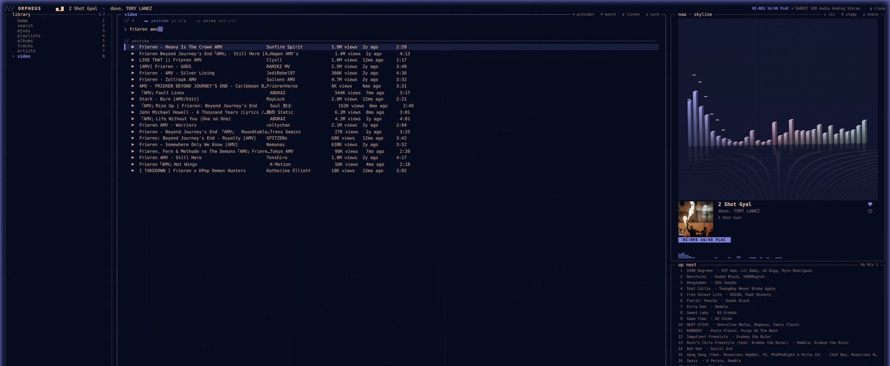
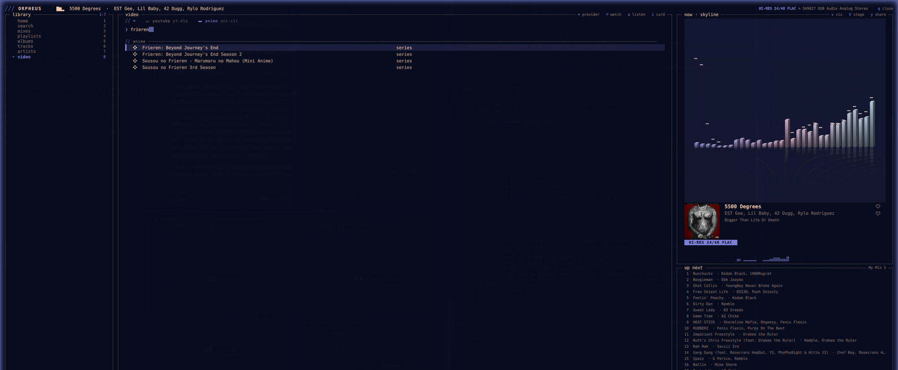

Prism
A spectrum city on a winding road, seen three-quarter on, camera banking into the curve.
A hi-res TIDAL player with no title bar, no rounded cards and no popout menus — box-drawing characters, braille spectrum glyphs, and a fragment shader running in the right half of the window.
That is not a video and not a CSS trick. It is Prism — Orpheus's own fragment shader, compiled to WebGL and running in your browser.
Change the pace and watch what happens. The bars do not just get taller; the world arrives sooner. A faster track moves the camera further every second.
Orpheus streams hi-res from TIDAL and hands 32 bands of live spectrum to a shader sitting inside the same window. The player, the stage, the desktop widget and the bar spectrum are one engine at four sizes — four surfaces, and nothing that springs out of a control.
Every style reads the same 32 bands and the same travel distance. What changes is the world they build out of it — and all five run live on the next page.
A spectrum city on a winding road, seen three-quarter on, camera banking into the curve.
Extruded columns on a mirrored floor, peak caps floating down, the grid flashing on every kick.
Glowing ridgelines rolling out of a banded sun — each ridge a past moment of sound.
Flying through rings of light that bend with the spectrum, warp streaks racing past.
A lit sphere pushed out by the spectrum, orbited by tilted rings carrying particles.
The same spectrum at bar size, for the status bar and the mini-player.
One page, three sources behind it — YouTube, SoundCloud and anime. Tab picks which service answers; a row knows how to play itself. None of it needs a TIDAL session, because none of it is TIDAL's.

The library is the remote; a second mpv is the screen. Enter opens it, and the transport strip drives it without leaving the page.
Press a on a YouTube result, or Enter on a SoundCloud one, and it goes through the music player instead — arriving with the queue, the equaliser and the visualiser already attached.
Curd has to own its own player to track AniList and skip the opening, so Orpheus opens it with an Orpheus-shaped window and gets out of the way.
ani-cli and Curd already know how to find a series and turn an episode into a stream, and their maintainers chase the sources every time one breaks. Orpheus drives them rather than forking them, so when they fix something, Orpheus is fixed too.
The flip side: anime works when they do. Sources come and go, and while one is down the page says so instead of pretending.

Built in the open, on one machine so far. What works, what is on the bench, and what will not happen.
Hi-res TIDAL streaming through mpv, MPRIS so the rest of the desktop can see the track, favourites everywhere, a queue that survives a restart — plus word-level lyrics and a key that copies a link to whatever is playing.
Seven fragment shaders behind five visual styles, feeding the player rail, the fullscreen stage, the desktop widget and a bar spectrum — with no popout menus and nothing that springs out of a control.
The world travels at the tempo of the track instead of flinching at its volume. Tempo comes from autocorrelating the spectral-flux envelope, and the shaders read an integrated travel distance rather than the clock.
YouTube and SoundCloud arrive as providers rather than separate apps — by the time they reach the player they are a URL, so the queue, the equaliser and the visualiser carry on unchanged. The video section adds a screen to the remote, and anime behind the same rows.
GPL-3.0-or-later, the whole thing: the Python daemon, the QML plugin and every shader. Quickshell and tidalapi are already LGPL-3, so it sits on the stack without friction.
It checks what is there, offers to install what is not, sets up the daemon, the
plugin and the keys, then opens the player. --uninstall puts the machine
back the way it was.
The install already passes on a simulated fresh Omarchy; next is real hardware I do not own — multi-monitor placement, themes beyond the 29 already handled, and the rough edges only other machines find. Issues welcome.
It cannot legally stream to a third-party client at all. No amount of wanting it changes that, so it is not on the list.
One command on an Omarchy machine. It checks what is there, offers to install what is missing, wires up the daemon, the plugin and the keys, then opens the player.
TIDAL playback needs a subscription; hi-res needs the PKCE sign-in, which the player walks you through. The video section works without one. Nothing is downloaded and nothing is decrypted: it streams, the same as the official client.
$ curl -fsSL https://raw.githubusercontent.com/GeneralDussDuss/orpheus/ main/install.sh | bash # then Super+Shift+M
Orpheus is one person's plugin for one window manager. A star is how I find out anyone else is running it — and it is what decides how much more of it gets built.